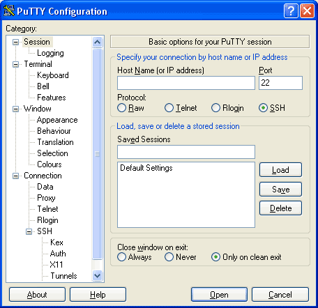
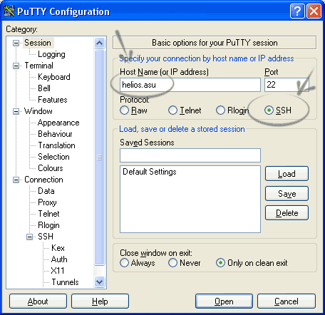
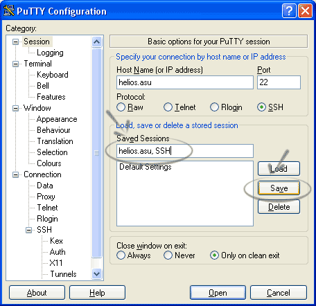
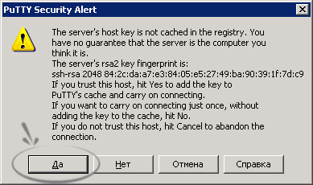
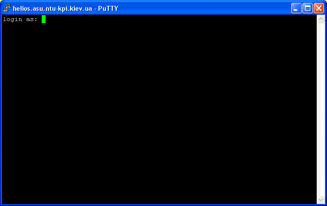
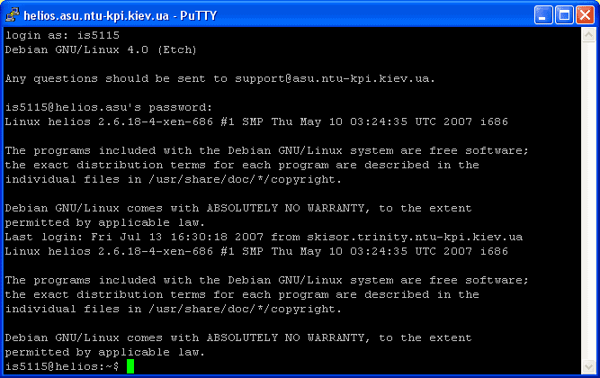
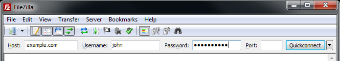

|
Разделы базы знаний
|
База знаний ::
Первые шаги ::
Подключение по SSH/SFTP
Подключение к виртуальному серверу по SSH и SFTPЭтот документ поможет Вам выполнить подключение к Вашему виртуальному серверу по протоколам SSH и SFTP. SSH (англ. Secure SHell — «безопасная оболочка») — сетевой протокол сеансового уровня, позволяющий производить удалённое управление операционной системой и туннелирование TCP-соединений (например, для передачи файлов). Сходен по функциональности с протоколами Telnet и rlogin, но, в отличие от них, шифрует весь трафик, включая и передаваемые пароли. SFTP (англ. SSH File Transfer Protocol) — протокол прикладного уровня, предназначенный для копирования и выполнения других операций с файлами поверх надёжного и безопасного соединения. Существует заблуждение, что SFTP это просто обычный FTP, работающий поверх SSH. В действительности SFTP — это новый протокол, разработанный с нуля.
Данные для подключения к виртуальному серверуВсе данные, необходимые для подключения к Вашему виртуальному серверу по SSH, Вы можете получить на главной странице панели управления.
Нам необходимо знать IP адрес виртуального сервера (1) и пароль для пользователя root (2). Получив необходимые данные для подключения, можно приступать непосредственно к процессу. Подключение к виртуальному серверу по SSH из Mac OS X или LinuxПользователи операционных систем Mac OS X или Linux могут использовать стандартное приложение terminal для подключения к виртуальному серверу по SSH протоколу. Для подключения к Вашему виртуальному серверу используйте следующую команду (измените 188.127.236.62 на IP адрес вашего виртуального сервера): Так выглядит процесс подключения к виртуальному серверу в терминале Unix или Mac OS X: Подключение к виртуальному серверу по SSH из WindowsПользователи операционной системы Windows могут использовать для соединения с виртуальным сервером по протоколу SSH программу PuTTY. PuTTY - очень популярный telnet/ssh клиент, распространяется бесплатно. Официальный сайт программы - http://www.chiark.greenend.org.uk/~sgtatham/putty/ Русскоязычный сайт поддержки - http://putty.org.ru/ После запуска программы вы увидите следущее окно:  Введите в поле “Host Name (or IP address)” IP-адрес Вашего виртуального сервера (на примере вводится helios.asu). Убедитесь, чтобы в пункте “Protocol” была выбрана радио-кнорка “SSH”.  Также, для того, чтобы каждый раз не вводить адресс и тип протокола вы можете сохранить сессию. Для этого введите ее название в поле “Saved Sessions” и нажмите кнопку “Save”.  После этого ваша сессия появится ниже в списке. Для того чтобы загрузить сохраненную сессию нужно выбрать ее из списка и нажать кнопку “Load”. Для подключения нажмите кнопку “Open” внизу формы. Может появиться следующее сообщение:  Если вы уверены в том, что подключаетесь к нужному хосту, то нажмите кнопку “Yes/Да”. Появится следующее:  Введите свой логин (root), затем пароль. Перед вами консоль системы:  Для выхода введите: Подключение к виртуальному серверу по SFTPМы не рекомендуем клиентам Clodo использовать для передачи файлов на виртуальный сервер устаревший протокол FTP. Мы рекомендуем использовать более новый и безопасный протокол SFTP – протокол передачи данных поверх безопасного соединения по протоколу SSH. У протокола SFTP много плюсов: Шифрование обеспечивает практически полную безопасность обмена данными с сервером Нет необходимости в дополнительном ПО на виртуальном сервере, в состав сервера OpenSSH уже входит SFTP-сервер. В любом из представленных на Clodo дистрибутивов не нужно ничего настраивать, всё работает «из коробки» Если Вы просто не можете жить без дополнительных настроек, то гибкость настройки SFTP сервера Вас поразит! При работе через SFTP, пользователи будут иметь те же права, что и на сервере, то есть, опять же, нет необходимости в дополнительной настройке. В общем плюсы можно перечислять бесконечно. В этом руководстве мы кратко рассмотрим возможности популярных клиентов по работе с SFTP протоколом Подключение по SFTP с помощью FileZillaОфициальный русскоязычный сайт FileZilla - http://filezilla.ru/ По умолчанию вам не нужно настраивать FileZilla, мы просто сразу начнём работать с программой. Для того, чтобы подключиться к SFTP-серверу, введите IP-адрес вашего виртуального сервера в поле быстрого подключения (вместо example.com, как показано на рисунке ниже введите sftp://ip_адрес_вашего_vps). Введите порт подключения в соответствующее поле, для SFTP - 22. Введите имя пользователя и пароль, в соответствующие поля. Нажмите на кнопку “Быстрое соединение” или нажмите Enter для подключения.  Отметим, что панель быстрого подключения, как ясно из названия, приспособлена для быстрых подключений, т.е. у вас нет возможности редактировать список из 10-ти последних подключений. Для сохранения параметров подключения используйте Менеджер Сайтов. Используйте Менеджер сайтов FileZilla для задания определённых параметров сайта и подключения к нужному SFTP-серверу. В Менеджере сайтов у вас есть возможность сохранять свои подключения и настраивать большее число параметров, чем доступно в панели быстрого подключения. После подключения, в правой стороне главного окна будет отображён список файлов и директорий. Текущая директория будет показана в редактируемом поле в верхней части. Ниже отображается удалённое дерево директорий, а ещё ниже - содержимое текущей удалённой директории. Перейти в другую директорию можно тремя разными путями. Первый: сделайте двойной щелчок на директории в списке. Второй: кликните на директории в дереве. Последний способ: введите имя директории в редактируемое поле и нажмите Enter. Обратите внимание на директорию “..”, присутствующую практически во всех остальных директориях. Эта ссылка позволяет вам перейти к родительскому каталогу текущей директории. Навигация на вашем компьютере работает почти так же, как и на сервере. Текущая локальная директория и дерево каталогов по умолчанию отображаются на левой стороне главного окна. Подробную документацию по работе с FileZilla, Вы можете найти на официальном сайте по адресу http://filezilla.ru/documentation/Using Условия использования документаМатериал представленный на данной странице может быть использован Вами по своему усмотрению. Разрешается копирование и распространение предоставленного материала без изменения содержания и без предварительного уведомления администрации Clodo.ru. Мы будем признательны Вам за сообщения об ошибках в представленной документации и за предложения об улучшении документации. По этим вопросам необходимо обращаться по адресу mail@clodo.ru. При обращении не забывайте указывать URL-адрес публикации. |
|
|
|
||||
|
|